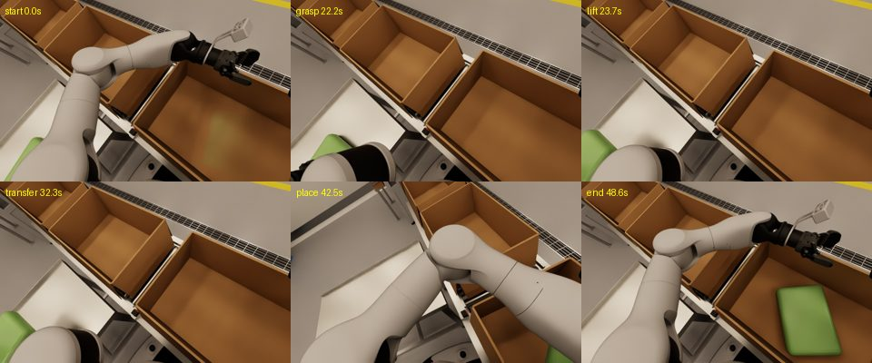
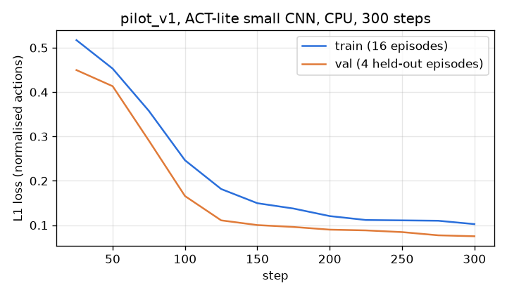

Case study: manufacturing
A humanoid at the end of a packing line
An AgiBot G2 picks sealed bags of salad and crisps from a table and packs them into cartons on a conveyor. Rejects go into totes in a sort rack.
- Robot
- AgiBot G2: wheeled base, waist, two 7-DoF arms, head RGB-D camera
- Task
- Pack-off of flexible, sealed bags into cartons
- Simulator
- AgiBot Genie Sim 3.2 on NVIDIA Isaac Sim 6.0.1
- Stage
- Simulation. No test on a real G2 yet
The job
A station the size of a person
Pack-off is still a manual job in many fresh-produce and snack factories. A person stands at the end of the line, takes pillow packs off a table, packs them into cartons and puts rejects aside.
The bags are soft, the products change and the station is built around a person. A wheeled humanoid with two arms fits into the same footprint, which makes pack-off a natural first job for one.

The cell
A complete end of line, built from one generator
We built a U-shaped cell the robot drives into: the pick table on its left, the conveyor in front and the sort rack on its right. Downstream, the line has a case erector, a drop gap with a floor bin, a right-angle transfer, a case sealer and a cobot palletiser, so the robot works inside a real line and not a bare table.
One Python generator makes the scene and the list of colliders. The motion planner and the tests use the same list, so a moved fixture is a one-line change that every check sees.
Motion
Every move is checked before it runs
The G2 turns its waist first, then moves the arm: +55° to the table, 0° to the carton, −95° to the rack. Each arm path is checked against the head camera and the fixtures over its full length, and the wheeled base holds its position on odometry while the arms move.

Drive-in
0.57cm
final position error after 2.0 m in 10.3 s, with 0.00° heading error.
Head clearance
0.20m
minimum distance from every arm path to the head camera. Paths that come closer are rejected.
Base hold
0.43cm
base drift while the arms move. Without the hold, a reach can push the base by up to 23 cm.
Data and training
From teleoperation to a training run
Operators drive the arms from a keyboard over SSH or with a SpaceMouse. A scripted generator randomises bag positions, orientation and labels inside the reachable zone, then records each episode and scores where the bag ended up.
Our pilot dataset has 20 episodes, and all 20 ended with the bag in the carton. Physics held 99.7 Hz and the head camera 30 Hz during generation, and the recorder wrote about 1.1 MB/s against 78 MB/s for the raw streams.
A first ACT-style training run on this data took the validation loss from 0.45 to 0.075 in 300 steps on a CPU. That run proves the pipeline works end to end. It is not an evaluation of a policy, and full training runs on cloud GPUs.


Mobility
A robot that can leave the cell
With two chassis lidars, the G2 maps the room with slam_toolbox and navigates with AMCL and Nav2. Both Nav2 goals in the test succeeded, with final errors of 0.10 m and 0.084 m. That run used the first cell layout, so the map has to be made again for the U cell.
The cell also includes an interface layer with the AgiBot GDK names, so code written for the real G2 runs on the simulated cell without changes.
Status
Simulation stage. All results on this page come from simulation. No test on a real G2 is complete.
The bags are rigid placeholders, so the grasp uses an attach and release. Deformable bags and a real gripper grasp are the next steps, followed by full policy training on cloud GPUs.
Code: agibot-g2-humanoid-packoff-cell, Apache-2.0, for non-commercial use. The renders use the AgiBot G2 model and GenieSimAssets (CC BY-NC-SA 4.0), AgiBot Genie Sim (MPL 2.0) and NVIDIA Isaac Sim.

Running a manual packing station?
We can model your line and show what a humanoid can and cannot do at it, before you buy one.